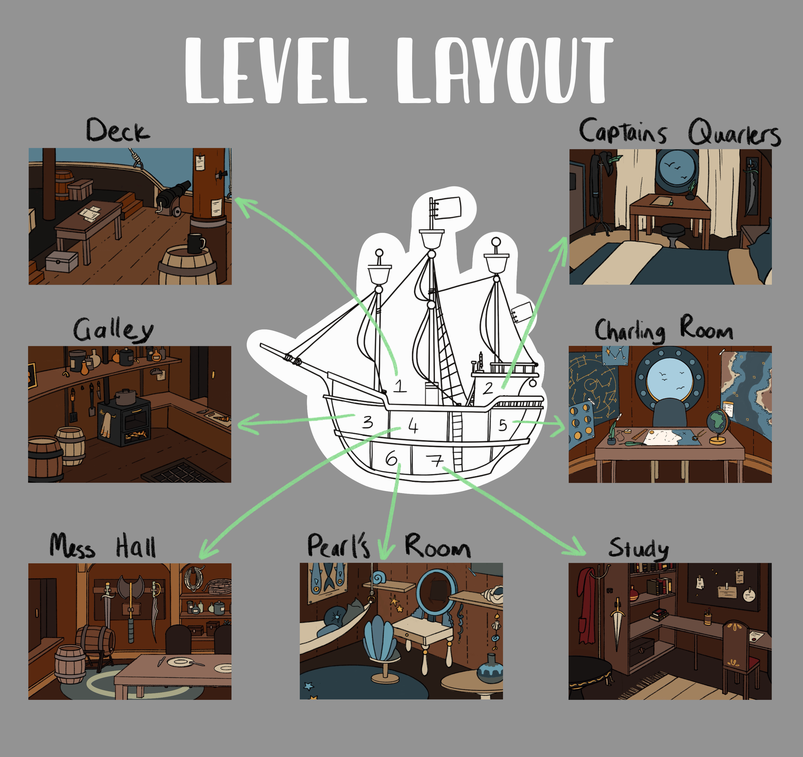
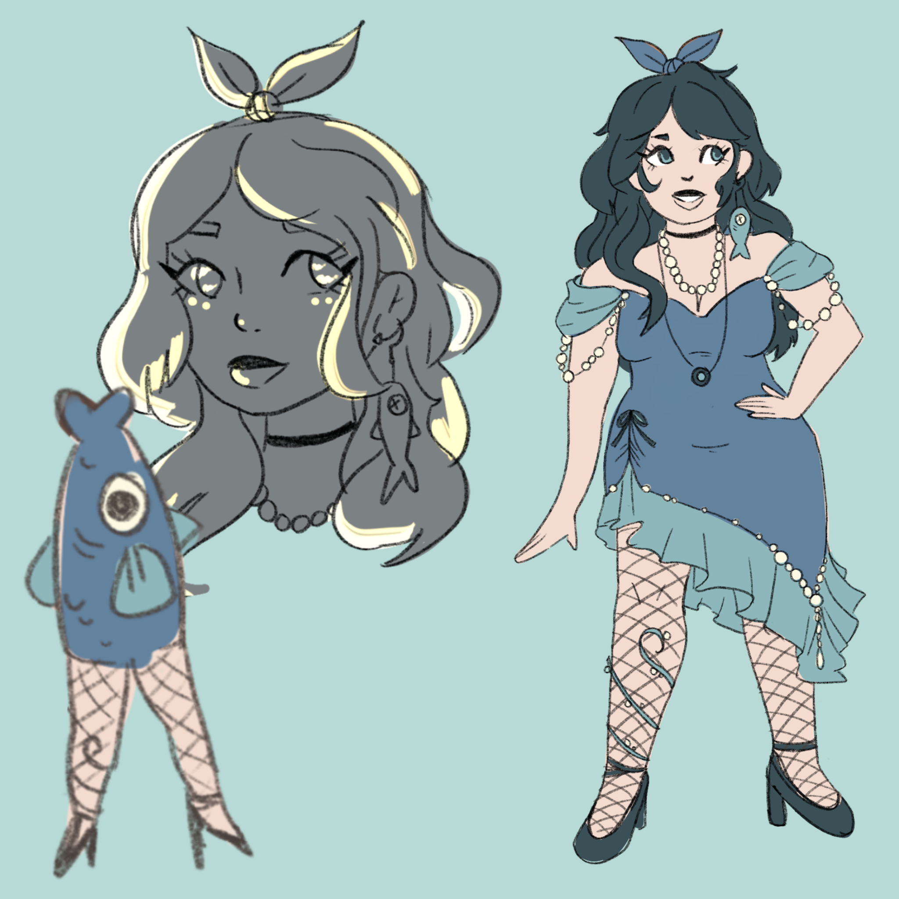

This project was my first experience using unity for game development.

I was responsible for drawing most of the backgrounds as well as designing the layout of the ship.
I kept the location of certain parts of the ship (portholes, masts, etc.) in the correct places within rooms to make sure it made sense. Every room also had to reflect the personalities of the love interests, or provide some other form of enviromental storytelling.
I was not the deams lead artist, however i also created the character concept drawings for each love interest. Many of the design choices I made carried on to the final version.
The character pictured here is called Pearl and she is a reverse mermaid. I wanted to hint at this by including a lot of oceanianic themes into her design. Her hair and dress are reminiscent of a jellyfish. She is wearing fishnet stockings and is wearing a fish hook and lure as an earing.
She has a super bubbly personality, so i made sure to include a lot of soft edges and circular shapes in her design to highlight that.

The entire dialogue system was created witha tool called Inky. This allowed us to keep dialogue seperate from the code without needing to contruct a brand new framework. It did come with some drawkbacks as many of the additional features we wanted our dialogue to do became a lot more challenging. However, I am now confident about reproducing a dynamic dialogue system using Inky intergration into Unity.